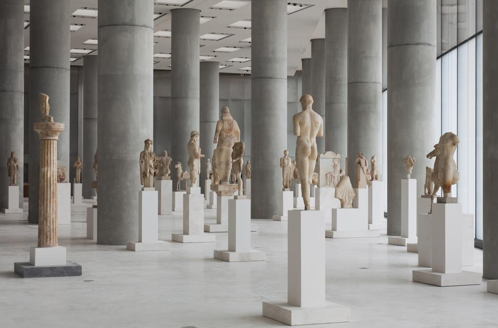

Σχετικά με το Μουσείο
Το Μουσείο Ακρόπολης βρίσκεται στην Αθήνα και φιλοξενεί αρχαιολογικά ευρήματα που προέρχονται κυρίως από τον αρχαιολογικό χώρο της Ακρόπολης.
Το νέο Μουσείο Ακρόπολης εγκαινιάστηκε το 2009 και σχεδιάστηκε με στόχο να παρουσιάσει με σύγχρονο τρόπο τα σημαντικότερα έργα τέχνης και αντικείμενα που συνδέονται με την ιστορία της Ακρόπολης.
Ιστορικές πληροφορίες
Η Ακρόπολη της Αθήνας αποτέλεσε σημαντικό θρησκευτικό και πολιτιστικό κέντρο της αρχαίας Αθήνας. Κατά την κλασική περίοδο, τον 5ο αιώνα π.Χ., κατασκευάστηκαν μερικά από τα σημαντικότερα μνημεία του χώρου, όπως ο Παρθενώνας, το Ερέχθειο και τα Προπύλαια.
Οι συλλογές του μουσείου παρουσιάζουν την εξέλιξη της τέχνης από την προϊστορική περίοδο έως την ύστερη αρχαιότητα. Ιδιαίτερη θέση κατέχουν τα γλυπτά και τα αρχιτεκτονικά μέλη του Παρθενώνα.
Η αρχιτεκτονική του σύγχρονου μουσείου επιτρέπει στους επισκέπτες να έχουν οπτική επαφή με την Ακρόπολη, συνδέοντας έτσι τα εκθέματα με τον χώρο από τον οποίο προέρχονται.
Η σημασία του μουσείου

Το Μουσείο Ακρόπολης αποτελεί σημαντικό κέντρο πολιτισμού, έρευνας και εκπαίδευσης. Μέσα από τις εκθέσεις του, οι επισκέπτες μπορούν να γνωρίσουν την ιστορία και τον πολιτισμό της αρχαίας Αθήνας.